Shapes reference
Drafted with AI, not yet reviewed
fidget’s own shapes, as of fidget a386417.
Each is documented with its fields, in order; C-c C-d shows the same, from fidget itself.
Which fields may be left out depends on the form of the call; see Calling shapes.
Signatures and their types are explained in Concepts.
Built-in 2D shapes
- 2D · fidget#
circle(center: Vec2 = [0, 0], radius: number = 1): Shapecircle(#{ center?: Vec2, radius?: number }): Shape A circle in the XY plane.
center- its centre,
[x, y] radius- its radius
The two have different types, so they may come in either order, and either may be left out.
Notes- Field: exact.
See alsoellipse,annulus,sphere.Example A plate with a hole of radius 3, its centre at x = 10.
max(rect([30, 16]), -circle([10, 0], 3))
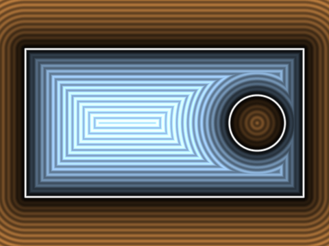
- 2D · fidget#
rectangle(lower: Vec2, upper: Vec2): Shaperectangle(#{ lower: Vec2, upper: Vec2 }): Shape A rectangle from one corner to the opposite one.
lower- the corner of the lowest X and Y,
[x, y] upper- the corner of the highest X and Y,
[x, y]
Both corners are needed, in this order.
Notes- Field: exact inside and beside the edges, a bound beyond the corners.
See alsorect, which is exact everywhere and rounds or chamfers its corners.Example A rectangle 40 by 20, from the origin up.
rectangle([0, 0], [40, 20])
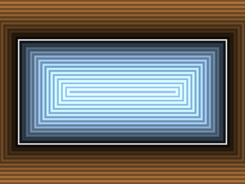
Built-in 3D shapes
- 3D · fidget#
sphere(center: Vec3 = [0, 0, 0], radius: number = 1): Shapesphere(#{ center?: Vec3, radius?: number }): Shape A sphere.
center- its centre,
[x, y, z] radius- its radius
The two have different types, so they may come in either order, and either may be left out.
Notes- Field: exact.
See alsoellipsoid,circle.Example A ball on a post.
union( sphere([0, 0, 20], 6), cylinder(2, [0, 20]) )
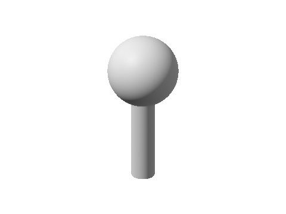
- 3D · fidget#
box(lower: Vec3, upper: Vec3): Shapebox(#{ lower: Vec3, upper: Vec3 }): Shape A box from one corner to the opposite one.
lower- the corner of the lowest X, Y and Z,
[x, y, z] upper- the corner of the highest X, Y and Z,
[x, y, z]
Both corners are needed, in this order.
Notes- Field: exact inside and off the faces, a bound beyond the edges and corners.
See alsocuboid, which is exact everywhere and rounds or chamfers its edges.Example A box 40 by 20 by 5, standing on z = 0.
box([-20, -10, 0], [20, 10, 5])
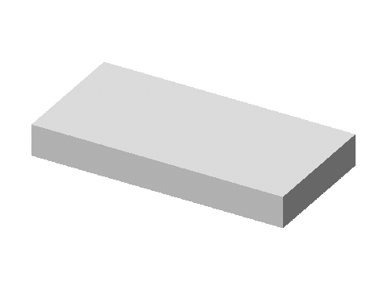
- 3D · fidget#
plane(axis: Axis, offset: number): Shapeplane(#{ axis: Axis, offset: number }): Shape The half-space behind a plane, as a shape; or a plane, as a value for
reflect.axis- the plane’s normal, as
axistakes it offset- the plane’s distance from the origin along
axis p"xy","yz"or"zx", or an axis, the plane’s normal
The shape is everything where the distance along
axisis belowoffset. Only the map, with both keys, builds the shape. Called with a name or an axis, and a float offset or none,planebuilds a Plane value instead. Called with an integer offset, it builds the shape.Notes- Field: exact.
- The value
plane("xy")’s normal is Y, not Z, as of fidget a386417.
See alsohalf_space,slab,reflect.Example A sphere cut by the plane z = 2.
intersection( sphere(10), plane(#{axis: "z", offset: 2}) )
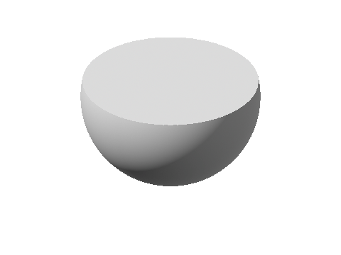
Combinations
- CSG · fidget#
union(...input: Shape[]): Shapeunion(input: Shape[]): Shape The union of shapes: everything inside any of them.
input- the shapes, up to eight as arguments, or an array of any length
It is
minover the shapes. An empty array is empty space. A single shape is an error,missing argument of type Vec<Tree>; a single array is fine.Notes- Field: exact outside, a bound inside where the shapes overlap.
See alsomin,union_round,intersection.Example Three bars crossing at the origin.
union( cuboid([24, 4, 4]), cuboid([4, 24, 4]), cuboid([4, 4, 24]) )
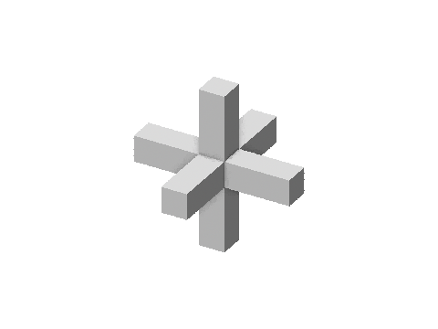
- CSG · fidget#
intersection(...input: Shape[]): Shapeintersection(input: Shape[]): Shape The intersection of shapes: only what is inside all of them.
input- the shapes, up to eight as arguments, or an array of any length
It is
maxover the shapes. An empty array is all of space.Notes- Field: exact inside, a bound outside near the edges where the surfaces meet.
See alsomax,intersection_round,union.Example A cube with its corners rounded off by a sphere.
intersection(sphere(12), cuboid(18))
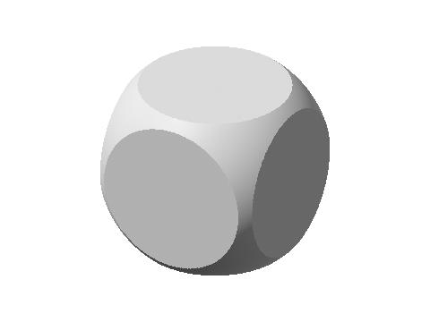
- CSG · fidget#
difference(shape: Shape, cutout: Shape): Shapeshape.difference(cutout: Shape): Shape shapewithcutoutcut away.shape- the shape to cut
cutout- what to cut away; an array of shapes cuts their union
It is
max(shape, -cutout). It takes exactly two arguments.Notes- Field: exact inside, a bound outside near the cut’s edges.
See alsodifference_round,inverse.Example A plate with two holes.
let plate = cuboid([40, 20, 4]); let holes = [ cylinder(3, 10).move([-10, 0, 0]), cylinder(3, 10).move([10, 0, 0]), ]; difference(plate, holes)
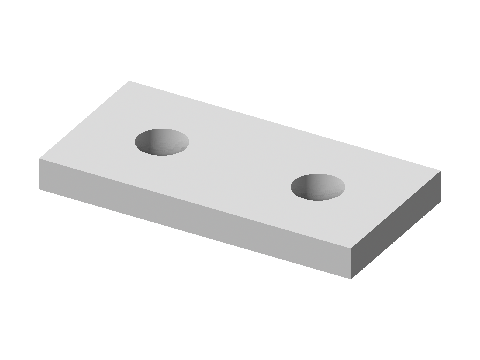
- CSG · fidget#
inverse(shape: Shape): Shapeshape.inverse(): Shape The shape with its inside and outside swapped.
shape- the shape
It is
-shape.Notes- Field: the shape’s, negated, so an exact field stays exact.
See alsodifference,-.Example A square with a round hole, a circle’s inverse cut to the square.
let outside = inverse(circle(10)); intersection(outside, rect(30))
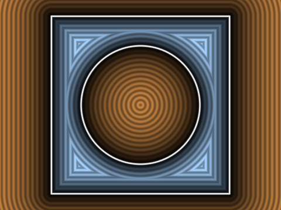
- CSG · fidget#
blend(a: Shape, b: Shape, radius: number): Shapea.blend(b: Shape, radius: number): Shape A smooth union of two shapes, blended over a distance.
a,b- the shapes
radius- how far from where they meet the blend reaches
The blend is Inigo Quilez’s quadratic smooth minimum. It swells the shapes a little where they meet, and has no fixed radius. By position, all three come, in this order.
Notes- Field: a bound.
smooth_unionwith its defaultkindis this same blend, and takes arrays of shapes, a width that varies over space, other profiles, and a difference and an intersection to match; prefer it in scripts.
See alsounion_round, which makes a circular fillet,smooth_union,smooth_difference,smooth_intersection.References- Inigo Quilez, Smooth minimum
Example A post blended into a plate.
let base = cuboid([40, 40, 4]); blend(base, cylinder(5, 30), 3)
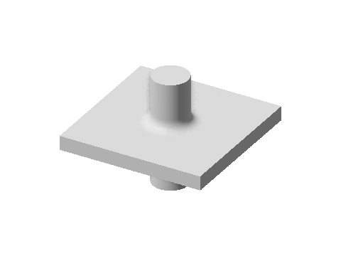
Transforms
Transforms take the shape first, so they chain: s.move([1, 0, 0]).rotate_z(45).
Moves, rotations and reflections keep a field exact.
- transform · fidget#
move(shape: Shape, offset: Vec3 = [0, 0, 0]): Shapeshape.move(offset: Vec3 = [0, 0, 0]): Shapeshape.move(#{ offset: Vec3 }): Shape The shape moved.
shape- the shape
offset- the move,
[x, y, z];[x, y]moves in the XY plane
Notes- Field: the shape’s, moved.
See alsoremap.From OpenSCADtranslate(v)is.move(v).Example A sphere moved up onto a cube.
union( cuboid(10), sphere(4).move([0, 0, 7]) )
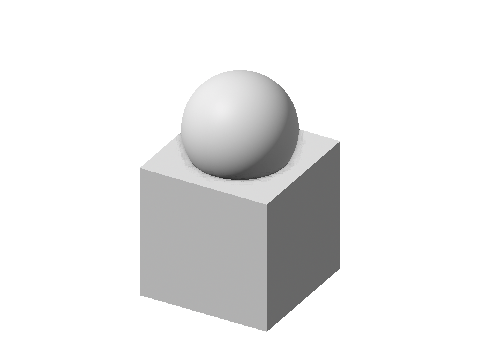
- transform · fidget#
rotate(shape: Shape,axis: Axis = [0, 0, 1],angle: number = 0,center: Vec3 = [0, 0, 0],): Shapeshape.rotate(axis: Axis = [0, 0, 1],angle: number = 0,center: Vec3 = [0, 0, 0],): Shapeshape.rotate(#{ axis: Axis, angle: number, center: Vec3 }): Shape The shape turned about an axis through a centre.
shape- the shape
axis- the axis,
"x","y"or"z", anaxisvalue, or a vector angle- the turn, in degrees, anticlockwise looking down the axis towards the centre
center- a point on the axis,
[x, y, z]
By position,
axis,angleandcentermay come in any order, and any of them may be left out. An array by position is taken forcenter, so a vector axis goes throughaxisor the map.Notes- Field: the shape’s, turned.
See alsorotate_x,rotate_xyz.Example A bar turned 30 degrees about Y.
cuboid([30, 4, 4]).rotate("y", 30)
- transform · fidget#
rotate_x(shape: Shape,angle: number = 0,center: Vec3 = [0, 0, 0],): Shapeshape.rotate_x(angle: number = 0, center: Vec3 = [0, 0, 0]): Shapeshape.rotate_x(#{ angle: number, center: Vec3 }): Shape The shape turned about an axis parallel to X.
shape- the shape
angle- the turn, in degrees, anticlockwise looking from +X
center- a point on the axis,
[x, y, z]
Notes- Field: the shape’s, turned.
See alsorotate,rotate_xyz.Example A rod tilted 45 degrees about X.
cylinder(2, 20).rotate_x(45)
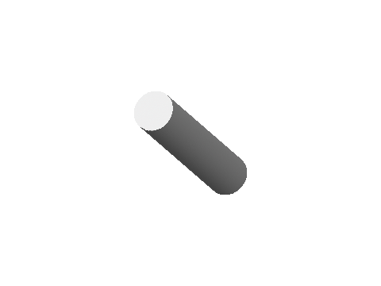
- transform · fidget#
rotate_y(shape: Shape,angle: number = 0,center: Vec3 = [0, 0, 0],): Shapeshape.rotate_y(angle: number = 0, center: Vec3 = [0, 0, 0]): Shapeshape.rotate_y(#{ angle: number, center: Vec3 }): Shape The shape turned about an axis parallel to Y.
shape- the shape
angle- the turn, in degrees, anticlockwise looking from +Y
center- a point on the axis,
[x, y, z]
Notes- Field: the shape’s, turned.
See alsorotate,rotate_xyz.Example A rod tilted 45 degrees about Y.
cylinder(2, 20).rotate_y(45)
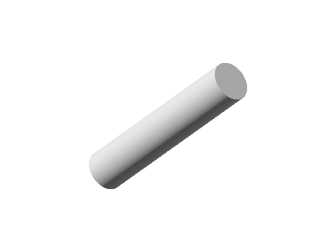
- transform · fidget#
rotate_z(shape: Shape,angle: number = 0,center: Vec3 = [0, 0, 0],): Shapeshape.rotate_z(angle: number = 0, center: Vec3 = [0, 0, 0]): Shapeshape.rotate_z(#{ angle: number, center: Vec3 }): Shape The shape turned about an axis parallel to Z.
shape- the shape
angle- the turn, in degrees, anticlockwise looking down from +Z
center- a point on the axis,
[x, y, z]
Notes- Field: the shape’s, turned.
See alsorotate,rotate_xyz.Example A bar turned 45 degrees about Z.
cuboid([20, 4, 4]).rotate_z(45)
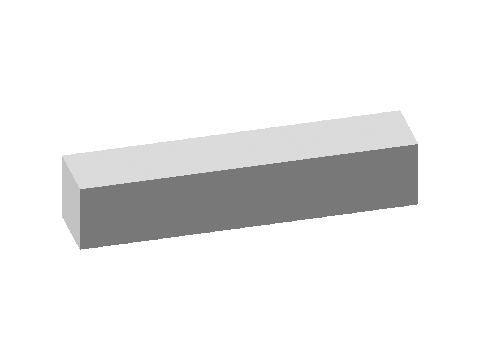
- transform · fidget#
scale(shape: Shape, scale: Vec3 = [1, 1, 1]): Shapeshape.scale(scale: Vec3 = [1, 1, 1]): Shapeshape.scale(#{ scale: Vec3 }): Shape The shape stretched by a factor along each axis, about the origin.
shape- the shape
scale- the factors,
[x, y, z];[x, y]leaves Z as it is
Notes- Field: a bound where every factor is at least 1; along an axis with a factor
sbelow 1, steep1 / s.
See alsoscale_bound,scale_exact.Example A sphere stretched into an ellipsoid.
sphere(10).scale([2, 1, 0.5])
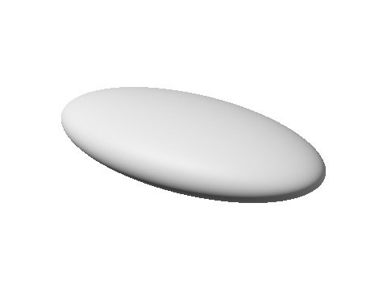
- transform · fidget#
scale_uniform(shape: Shape, scale: number = 1): Shapeshape.scale_uniform(scale: number = 1): Shapeshape.scale_uniform(#{ scale: number }): Shape The shape grown by one factor along every axis, about the origin.
shape- the shape
scale- the factor, a number
Notes- Field: the shape’s, not rescaled, so
scaletimes too small: a bound for a factor above 1, steep1 / scalebelow 1.
See alsoscale_exact, which keeps the field a distance.Example A sphere with a copy half its size on top.
let ball = sphere(6); let small = ball.scale_uniform(0.5).move([0, 0, 8]); union(ball, small)
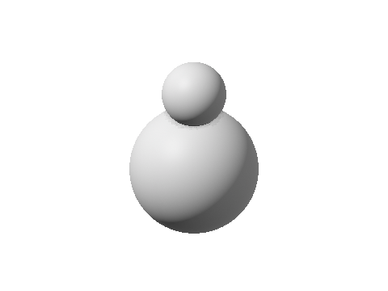
- transform · fidget#
reflect(shape: Shape,plane: Plane = #{axis: [1, 0, 0], offset: 0},): Shapeshape.reflect(plane: Plane = #{axis: [1, 0, 0], offset: 0}): Shapeshape.reflect(#{ plane: Plane }): Shape The shape mirrored across a plane.
shape- the shape
plane- the plane, a
planevalue, or a name
A name gives a plane through the origin:
"yz"or"x"mirrors across X,"zx"or"y"across Y,"z"across Z. Aplanevalue with an offset gives a plane off the origin.Notes- Field: the shape’s, mirrored.
- As of fidget a386417,
"xy"mirrors across Y, not Z;"z"andreflect_zmirror across Z.
See alsoreflect_x,symmetric_x.Example A tilted rod and its mirror image across Y.
let s = cylinder(2, 20).rotate_x(30).move([0, 6, 0]); union(s, s.reflect("zx"))
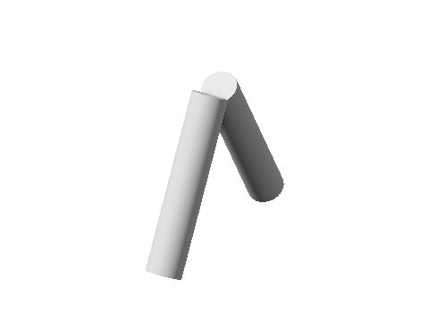
- transform · fidget#
reflect_x(shape: Shape, offset: number = 0): Shapeshape.reflect_x(offset: number = 0): Shapeshape.reflect_x(#{ offset: number }): Shape The shape mirrored across the plane x =
offset.shape- the shape
offset- the X of the plane
Notes- Field: the shape’s, mirrored.
See alsoreflect,symmetric_x.From OpenSCADmirror([1, 0, 0])is.reflect_x().Example A tilted rod and its mirror image across X.
let s = cylinder(2, 20).rotate_y(30).move([6, 0, 0]); union(s, s.reflect_x())
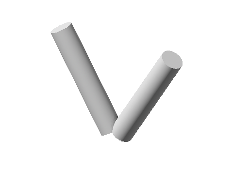
- transform · fidget#
reflect_y(shape: Shape, offset: number = 0): Shapeshape.reflect_y(offset: number = 0): Shapeshape.reflect_y(#{ offset: number }): Shape The shape mirrored across the plane y =
offset.shape- the shape
offset- the Y of the plane
Notes- Field: the shape’s, mirrored.
See alsoreflect,symmetric_y.Example A tilted cone and its mirror image across Y.
let s = cone([4, 0], 12).rotate_x(-60).move([0, 8, 0]); union(s, s.reflect_y())
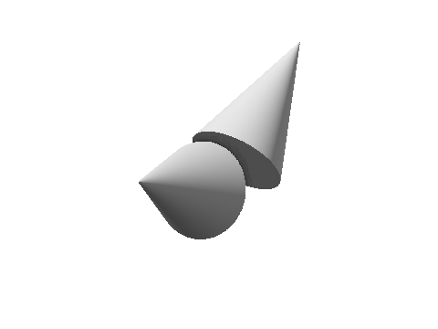
- transform · fidget#
reflect_z(shape: Shape, offset: number = 0): Shapeshape.reflect_z(offset: number = 0): Shapeshape.reflect_z(#{ offset: number }): Shape The shape mirrored across the plane z =
offset.shape- the shape
offset- the Z of the plane
Notes- Field: the shape’s, mirrored.
See alsoreflect,symmetric_z.Example A cone and its mirror image across Z.
let s = cone([6, 0], 10).move([0, 0, 5]); union(s, s.reflect_z())
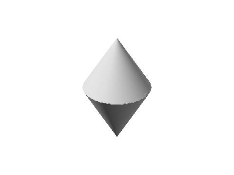
- transform · fidget#
reflect_xy(shape: Shape, offset: number = 0): Shapeshape.reflect_xy(offset: number = 0): Shapeshape.reflect_xy(#{ offset: number }): Shape The shape mirrored across the plane x = y, so that X and Y swap.
shape- the shape
offset- how far the plane is moved along its normal
Notes- Field: the shape’s, mirrored.
See alsoreflect.Example A bar along X and its mirror image along Y.
let s = cuboid([20, 4, 4]).move([12, 0, 0]); union(s, s.reflect_xy())
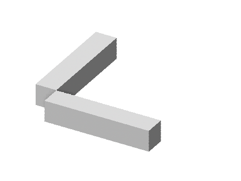
- transform · fidget#
repeat_x(shape: Shape, radius: number, offset: number): Shapeshape.repeat_x(radius: number, offset: number): Shapeshape.repeat_x(#{ radius: number, offset: number }): Shaperepeat_x(#{shape: Shape,radius?: number,offset?: number,}): Shape The shape repeated without end along X.
shape- the shape
radius- half the length of a cell; copies are
2 * radiusapart offset- the X of the cell’s centre
The part of the shape within
radiusofoffsetis copied into every cell. By position, all three come, in this order; only the map withshapeleavesradiusoroffsetout.Notes- Field: the shape’s, as long as the shape stays inside its cell with some margin; the field jumps at the cells’ edges where the shape’s differs there.
See alsorepeat,repeat_grid,%.References- Inigo Quilez, Domain repetition
Example A row of spheres 10 apart, cut to a length.
let balls = sphere(3).repeat_x(5, 0); intersection(balls, cuboid([50, 10, 10]))
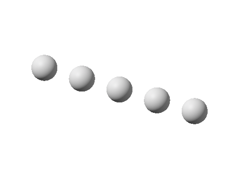
From 2D to 3D
- 2D to 3D · fidget#
extrude_z(shape: Shape, lower: number, upper: number): Shapeshape.extrude_z(lower: number, upper: number): Shapeshape.extrude_z(#{ lower: number, upper: number }): Shapeextrude_z(#{shape: Shape,lower?: number,upper?: number,}): Shape A 2D shape extruded along Z, from z =
lowerup toupper.shape- the 2D shape; its slice at z = 0 is the one extruded
lower,upper- the heights of the bottom and the top
By position, all three come, in this order.
Notes- Field: exact inside and beside the walls, a bound beyond the rims.
See alsoextrude, which is exact at the rims and rounds or chamfers them.Example A hexagonal plate 5 thick.
hexagon_af(20).extrude_z(0, 5)
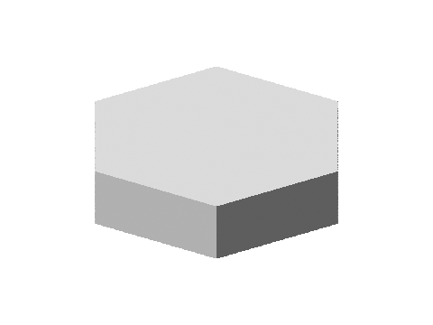
- 2D to 3D · fidget#
loft_z(a: Shape, b: Shape, lower: number, upper: number): Shapea.loft_z(b: Shape, lower: number, upper: number): Shapeloft_z(#{ a: Shape, b: Shape, lower?: number, upper?: number }): Shape A solid that turns from one 2D shape into another as it rises.
a- the 2D shape at the bottom
b- the 2D shape at the top
lower,upper- the heights of the bottom and the top
Between the two heights, the field is interpolated linearly from
a’s tob’s. By position, all four come, in this order.Notes- Field: not a distance, though close to one for similar shapes.
See alsoloft, which keeps a distance where the walls lean and eases between the shapes.Example A circle that becomes a square as it rises.
loft_z(circle(10), rect(16), 0, 20)
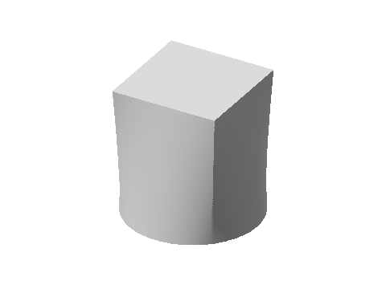
- 2D to 3D · fidget#
revolve_y(shape: Shape, offset: number = 0): Shapeshape.revolve_y(offset: number = 0): Shapeshape.revolve_y(#{ offset: number }): Shape Meant to revolve a 2D shape about the Y axis; as of fidget a386417 it does not.
shape- the 2D shape
offset- the X of the axis
It evaluates the shape at (√(x² + y²), y, z), which is no solid of revolution.
See alsorevolve, which revolves a 2D shape about Z.